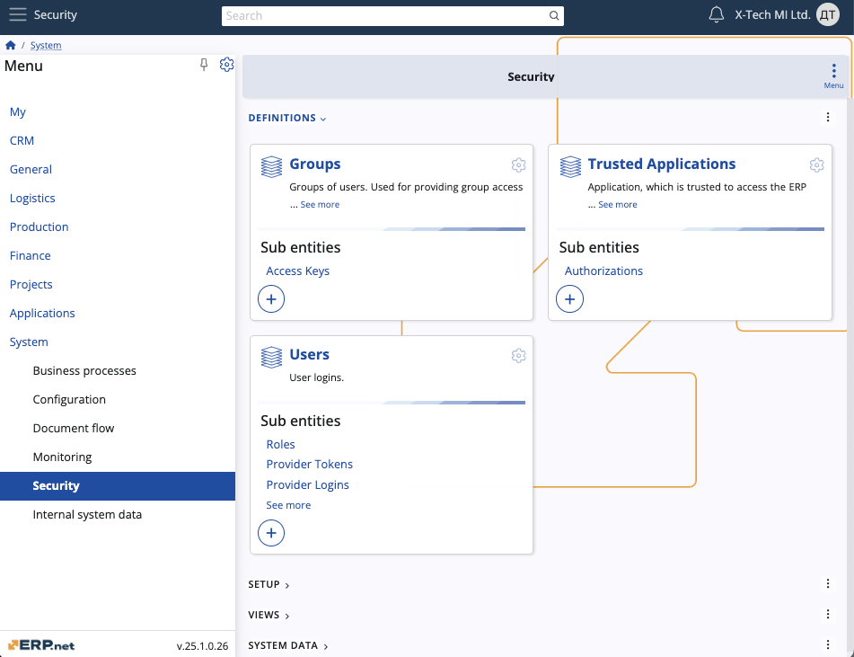

Security
The Security section focuses on managing access controls and permissions within the system to safeguard sensitive data and ensure adequate user interactions. It plays a crucial role in maintaining the integrity and confidentiality of ERP.net system data and operations.
It offers features such as defining user roles, configuring system permissions, managing access keys for data security, and controlling the visibility of UI elements based on roles and preferences.
In addition, you can perform a variety of UI functions.

Definitions
Groups
- Groups of users with collective access to secure data.
Trusted Applications
- Applications trusted to access ERP.net data securely.
Users
- All user logins with assigned roles within the system.
Setup
Domains
- Represents user domains with distinct email configurations, organizing users into separate administrative units.
Entities
- Contains entities which can have specific access permissions granted.
Roles
- Various roles granting different permissions and capabilities, applicable to existing users.
Views
System Permissions
- Controls access to different parts of ERP.net based on predefined permissions.
System Data
Access Keys
- Provides a basic locking mechanism for data security by assigning access keys to records.
Column Permissions
- Manages user permissions for accessing specific system data columns.
External Applications
- Lists external applications authorised to run operations.
Visual Permissions
- Manages permissions for client applications to show/hide UI elements based on user roles and preferences.